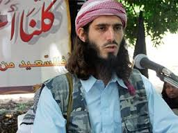
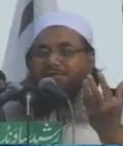
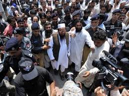
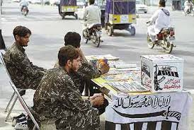
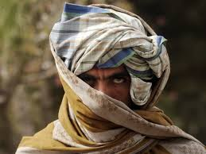
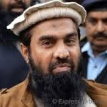

|
ORGANISATIONS OF LASHKAR-E-TAIBA
|
|
Lashkar-e-Taiba is one of the largest and most active terrorist organizations in South Asia, operating mainly from Pakistan. It was founded in 1987 by Hafiz Saeed, Abdullah Azzam and Zafar Iqbal in Afghanistan, with funding from Osama Bin Laden. With its headquarters based in Muridke, near Lahore in Punjab province of Pakistan. the group operates several training camps in Pakistan-administered Kashmir.
Lashkar-e-Taiba has been accused by India of attacking military and civilian targets in India, most notably the 2001 Indian Parliament attack and the 2008 Mumbai attacks. Its stated objective is to introduce an Islamic state in South Asia and to "liberate" Muslims residing in Indian Kashmir. The organization is banned as a terrorist organization by India, the United States, the United Kingdom, the European Union, Russia, and Australia. Though formally banned by Pakistan, the general view of India and the Western countries, including of experts such as former French investigating magistrate Jean-Louis Bruguière and New America Foundation president Steve Coll is that Pakistan's main intelligence agency, the Inter-Services Intelligence (ISI), continues to give LeT help and protection. When LeT was banned in Pakistan, the political arm of the group, Jamat ud Dawah (JuD), was not initially banned despite its recognition by the UN Security Council as a LeT front. JuD continued to remain un-banned until 2015. However, JuD still continues to work openly as LeT's charitable wing.
While the primary area of operations of LeT's militant activities is the Kashmir Valley, their professed goal is not limited to challenging India's sovereignty over Jammu and Kashmir.
LeT sees the issue of Kashmir as part of a wider global struggle.The group has repeatedly claimed through its journals and websites that its main aim is to destroy the Indian republic and to annihilate Hinduism and Judaism. LeT has declared Hindus and Jews to be the "enemies of Islam", as well as India and Israel to be the "enemies of Pakistan". In a pamphlet entitled "Why Are We Waging Jihad?" the group defined its agenda as the restoration of Islamic rule over all parts of India and declared India, Israel and the United States as existential enemies of Islam.The LeT believes that jihad is the duty of all Muslims and must be waged until eight objectives are met: ending persecution against Muslims, establishing Islam as the dominant way of life in the world, forcing infidels to pay jizya, fighting for the weak and feeble against oppressors, exacting revenge for killed Muslims, punishing enemies for violating oaths and treaties, defending all Muslim states, and recapturing occupied Muslim territory.
In the wake of the November 2008 Mumbai attacks, investigations of computer and email accounts revealed a list of 320 locations worldwide deemed as possible targets for attack. Analysts believed that the list was a statement of intent rather than a list of locations where LeT cells had been established and were ready to strike.
In January 2009, LeT publicly declared that it would pursue a peaceful resolution in the Kashmir issue and that it did not have global jihadist aims, but the group is still believed to be active in several other spheres of anti-Indian terrorism. The disclosures of Abu Jundal, who was extradited to India by the Saudi Arabian government, however, revealed that LeT is planning to revive militancy in Jammu and Kashmir and conduct major terror strikes in India.
In 1985, Hafiz Mohammed Saeed and Zafar Iqbal formed the Jamaat-ud-Dawa (Organization for Preaching, or JuD) as a small missionary group dedicated to promoting an Ahl-e-Hadith version of Islam. In the next year, Zaki-ur Rehman Lakvi merged his group of anti-Soviet jihadists with the JuD to form the Markaz-ud Dawa-wal-Irshad (Center for Preaching and Guidance, or MDI). The MDI had 17 founders originally, and notable among them was Abdullah Azzam.
The LeT was formed in Afghanistan's Kunar province in 1990 and gained prominence in the early 1990s as a military offshoot of MDI. MDI's primary concerns were dawah and the LeT focused on jihad although the members did not distinguish between the two groups' functions. According to Hafiz Saeed, "Islam propounds both dawa and jihad. Both are equally important and inseparable. Since our life revolves around Islam, therefore both dawa and jihad are essential; we cannot prefer one over the other."
Most of these training camps were located in North-West Frontier Province (NWFP) and many were shifted to Azad Kashmir for the sole purpose of training volunteers for the Kashmir Jihad. From 1991 onwards, militancy surged in Indian Kashmir, as many Lashkar-e-Taiba volunteers were infiltrated into Indian Kashmir from Azad Kashmir with the help of the Pakistan Army and ISI. As of 2010, the degree of control that Pakistani intelligence retains over LeT's operations is not known. |
|
|  |
 |
| |
Hafiz Muhammad Saeed |
|  |
 |
| |
|  |
Abdul Rehman Makki |
|  |
| |
Zaki-ur-Rehman Lakhvi |